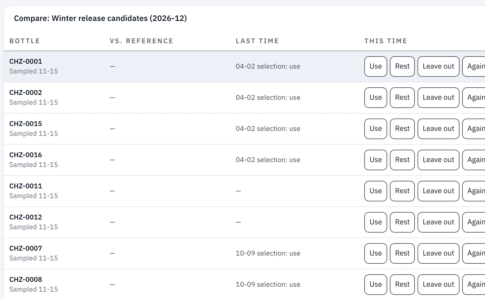

Daily checks and cask selection
From the QR code on a bottle, or its number, the cask’s background and the previous record line up. For a check, press “as usual”, “different” or “again”. For cask selection, press “use”, “rest”, “leave out” or “again”. Then move on to the next bottle.
